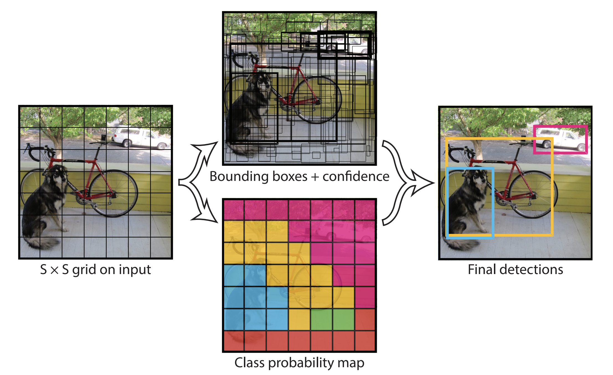
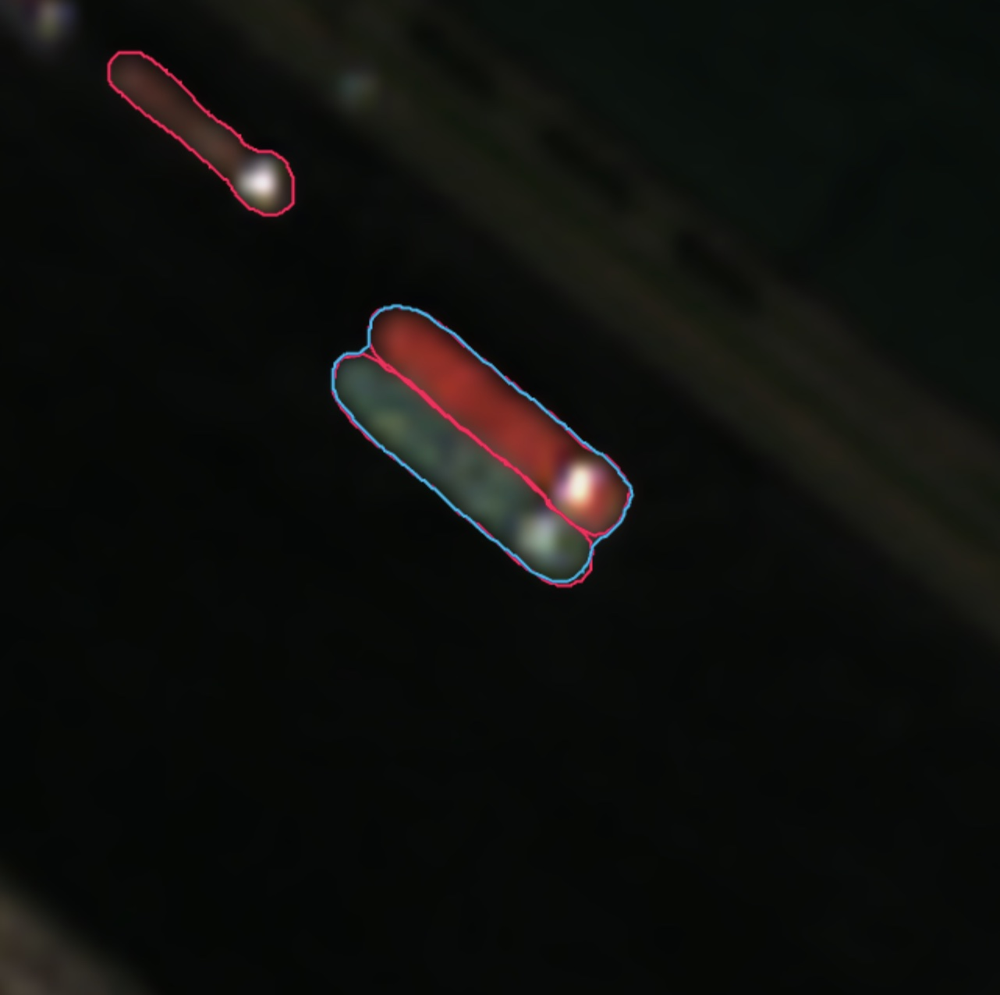
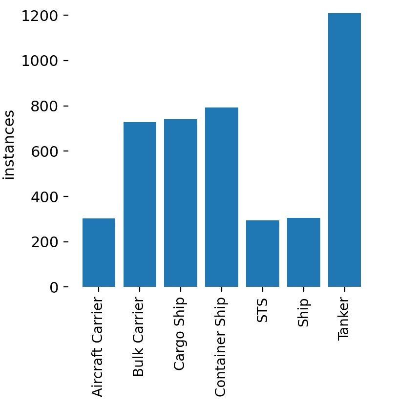
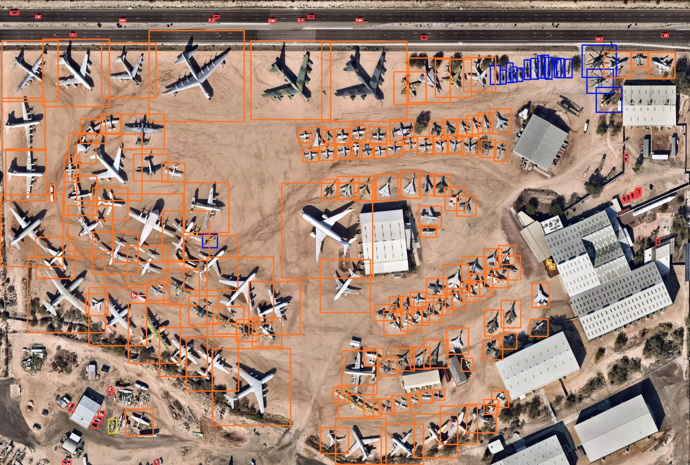

Object Detection
The Ship Detection tutorial explored a use case in which we might want to monitor the activity of ships in a particular location. That was a fairly straightforward task: the sea is very flat, and ships (especially large cargo and military vessels) protrude significantly. Using radar imagery, we could just set a threshold because if anything on the water is reflecting radio waves, it’s probably a ship.
One shortcoming of this approach is that it doesn’t tell us what kind of ship we’ve detected. Sure, you could use the shape and size to distinguish between a fishing vessel and an aircraft carrier. But what about ships of similar sizes? Or what if you wanted to use satellite imagery to identify things other than ships, like airplanes, cars, or bridges? This sort of task– called “object detection” is a bit more complicated.
In this tutorial, we’ll be using a deep learning model called YOLOv5 to detect objects in satellite imagery. We’ll be training the model on a custom dataset, and then using it to dynamically identify objects in satellite imagery of different resolutions pulled from Google Earth Engine. The tutorial is broken up into three sections:
- Object detection in satellite imagery
- Training a deep learning model on a custom dataset
- Dynamic inference using Google Earth Engine
Unlike previous tutorials which used the GEE JavaScript API, this one will utilize Python; this is because these sorts of deep learning models aren’t available in GEE natively yet. By the end, we’ll be able to generate images such as the one below:

Object Detection in Satellite Imagery
Object detection in satellite imagery has a variety of useful applications.
There’s the needle-in-a-haystack problem of needing to monitor a large area for a small number of objects. Immediately prior to the invasion of Ukraine, for example, a number of articles emerged showing Russian military vehicles and equipment popping up in small clearings in the forest near the border with Ukraine. Many of these deployments were spotted by painstakingly combing through high resolution satellite imagery, looking for things that look like trucks. One problem with this approach is that you need to know roughly where to look. The second, and more serious problem, is that you need to be on the lookout in the first place. Object detection, applied to satellite imagery, can automatically comb through vast areas and identify objects of interest. If planes and trucks start showing up in unexpected places, you’ll know about it.
Perhaps you’re not monitoring that large of an area, but you want frequent updates about what’s going on. What sorts of objects (planes, trucks, cars, etc.) are present? How many of each? Where are they located? Instead of having to manually look through new imagery as it becomes available, you could have a model automatically analyze new collections and output a summary.
YOLOv5
Object detection is a fairly complicated task, and there are a number of different approaches to it. In this tutorial, we’ll be using a model called YOLOv5. YOLO stands for You Only Look Once, and it’s a model that was developed by Joseph Redmon et. al., and the full paper detailing the model can be found here.
The YOLOv5 model is a convolutional neural network (CNN), which is a type of deep learning model. CNNs are very good at identifying patterns in images, particularly in small regions of images. This is important for object detection, because we want to be able to identify objects even if they’re partially obscured by other objects.
YOLO works by chopping an image up into a grid, and then predicting the location and size of objects in each grid cell:

It learns the locations of these objects by training on a dataset of images in which each object is indicated by a bounding box. Then, when it’s shown a new image, it will attempt to predict bounding boxes around the objects in that image. The standard YOLO model is trained on the COCO dataset, which contains over 200,000 images of 80 different objects ranging from people to cars to dogs. YOLO models pre-trained on this dataset work great out of the box to detect objects in videos, photographs, and live streams. But the nature of the objects we’re interested in is a bit different.
Luckily, we can simply re-train the YOLOv5 model on datasets of labeled satellite imagery. The rest of this tutorial will walk through the process of training YOLOv5 on a custom dataset, and then using it to dynamically identify objects in satellite imagery pulled from Google Earth Engine.
Training
The process of re-training the YOLOv5 model on satellite imagery is fairly straightforward and can be accomplished in just three steps; first, we’re going to clone the YOLOv5 repository which contains the model code and the training scripts. Then, we’ll download a dataset of satellite imagery and labels from Roboflow, and finally, we’ll train the model on that dataset.
Let’s start by cloning the YOLOv5 repository. Note: we’ll be using a fork of the original repository that I’ve modified to include some pre-trained models that we’ll be using later on.
!git clone https://github.com/oballinger/yolov5_RS # clone repo
%cd yolov5_RS # change directory to repo
%pip install -qr requirements.txt # install dependencies
%pip install -q roboflow # install roboflow
import torch # install pytorch
import os # for os related operations
from IPython.display import Image, clear_output # to display imagesOnce we’ve downloaded the YOLOv5 repository, we’ll need to download a dataset of labeled satellite imagery. For this example, we’re going to stick with ship detection as our use case, but expand upon it. We want to be able to distinguish between different types of ships, and we want to use freely-available satellite imagery.
To that end, we’ll be using this dataset, which contains 3400 labeled images taken from Sentinel-2 (10m/px) and PlanetScope (3m/px) satellites. Ships in these images are labeled by drawing an outline around them:

The image above shows three ships and what is known as an STS – a “Ship-To-Ship” transfer – which is when a ship is transferring cargo to another ship. There are a total of seven classes of ship in this dataset:

This dataset can be downloaded directly from Roboflow using the following code:
from roboflow import Roboflow
rf = Roboflow(api_key="<YOUR API KEY>")
project = rf.workspace('ibl-huczk').project("ships-2fvbx")
dataset = project.version("1").download("yolov5")You’ll need to get your own API key from Roboflow, which you can do here, and insert it in the second line of code. Roboflow is a platform for managing and training deep learning models on custom datasets. It’s free to use for up to three projects, and hosts a large number of datasets that you can use to train your models. To use a different dataset, you can simply change the project name and version number in the second and third lines of code.
Finally, we can train our YOLOv5 model on the dataset we just downloaded in just one line of code:
!python train.py --data {dataset.location}/data.yaml --batch 32 --cacheThis should take about an hour.
Accuracy Assessment
Using Tensorboard, we can log the performance of our model over the course of the training process:
One metric in particular, mAP 0.5, is a good indicator of how well our model is performing. We can see it increasing rapidly at first, and then leveling off after around 30 epochs of training. The rest of this subsection will explain what exactly the mAP 0.5 value represents in this context. If you’re interested in training your own model at some point, the rest of this subsection will be of interest. If you’re just interested in deploying a pre-trained model, you can skip ahead to the next subsection.
In the past when we’ve worked on machine learning projects (for example in the makeshift refinery identifion tutorial), our training and validation data was a set of points – geographic coordinates – which we labeled as either being a refinery or not. Calculating the accuracy of that model was fairly straightforward, since predictions were either true positives, true negatives, false positives or false negatives.
This is slightly more complicated for object detection. We’re not going pixel-by-pixel and trying to say “this is a ship” or “this is not a ship.” Instead, we’re looking at a larger image, and trying to draw boxes around the ships. The problem is that there are many ways to draw a box around a ship. The image below shows the labels used in our training data to indicate the location of ships.


The predicted bounding boxes are very close to the actual bounding boxes, but they’re not exactly the same. The first step in evaluating the performance of our model is to determine how close the predicted boxes are to the actual boxes. We can do this by calculating the intersection over union (IoU) of the predicted and actual boxes. This is essentially a measure of how much overlap there is between the the predicted and actual boxes:

The IoU is a value between 0 and 1, where 0 means that the boxes don’t overlap at all, and 1 means that the boxes overlap perfectly. Now we can set a threshold value for the IoU, and say that if the IoU is greater than that threshold, then we’ll count that as a correct prediction. Now that we can classify a prediction as correct or incorrect, we can calculate two important metrics: \[\text{Precision} = \frac{\text{True Positives}}{\text{True Positives} + \text{False Positives}}\]
This is the proportion of positive identifications that are actually correct. If my model detects 100 ships and 90 of them are actually ships, then my precision is 90%.
\[\text{Recall} = \frac{\text{True Positives}}{\text{True Positives} + \text{False Negatives}}\]
This is the proportion of actual positives that are identified correctly. If there are 100 ships in the image, and my model detects 90 of them, then my recall is 90%.
These two metrics are inversely related; I could easily get 100% recall by drawing lots of boxes everywhere to increase my chances of detecting all the ships. Conversely, I could get 100% precision by being extremely conservative and just drawing one or two boxes around the ships I’m most confident about. The key is to maximize both: we want our model to be sensitive enough to detect as many ships as possible (high recall), but also precise enough to only draw boxes around the ships that are actually there (high precision). Researchers find this balance using a Precision-Recall curve (PR curve), which plots precision on the y-axis and recall on the x-axis. Below is the Precision-Recall curve for our final model, for each class:

Starting from the top left corner, we set a very high confidence threshold: precision is 1, meaning that every box we draw is a ship, but recall is near 0 meaning that we’re not detecting any ships. As we lower the confidence threshold, we start to detect more ships, but we also start to draw boxes around things that aren’t ships. Towards the middle of the curve, we’re detecting most of the ships, but we’re also drawing boxes around a lot of false positives. Towards the bottom right corner, we’re detecting all the ships, but we’re also generating lots of false positives.
The goal is to find the point on the curve where precision and recall are both high; the closer the peak of our curve is to the top right corner, the better. A perfect model would touch the top right corner: it would have precision of 1 and recall of 1, detecting all of the ships without making any false positives. The area under this curve is called the Average Precision (AP), and is a measure of how close the curve is to the top right corner. The perfect model would have an AP of 1.
Some classes have a very high AP – the value for the Aircraft Carrier class is 0.995, which is very high (though this could be down to the fact that we have a relatively small number of images with aircraft carriers in them). Ship-To-Ship (STS) transfer operations also have a high AP, at 0.951. However, other classes – notably the “Ship” class – have a low AP. This may be because the “Ship” class is a catch-all for any ship that doesn’t fit into one of the other classes, so it encompasses lots of weird looking ships.
Finally, the mean Average Precision (mAP) is the average of the AP for each class, shown as the thick blue line above. Remember, all of this is premised on using a 0.5 threshold in the overlap (IoU) between our predicted boxes and the labels, which is why the final metric is called mAP 0.5. The mAP 0.5 for our model is 0.775, which is pretty good.
This number is very useful when training a model in several different ways using the same dataset, in order to select the best performing one. It’s not that useful for comparing models trained on different datasets, since the mAP 0.5 is dependent on the number of classes in the dataset and the nature of those classes. For example, in the next section we’ll be using a different model trained on the DOTA dataset which has a mAP 0.5 of around 0.68, largely due to the fact that it has around twice as many classes and many of them are similar to each other.
Inference
Now that we’ve got a trained model, we can use it to conduct object detection on new images. we’ll build a data processing pipeline in three steps by:
- Loading our trained model
- Creating an interactive map to define the area we want to analyze.
- Defining a function to run object detection within this area.
1. Loading a trained model
During the training process, YOLO is iteratively tweaking the model to try to maximize mAP 0.5. It automatically saves the best version of the model in the following location: YOLOv5_RS/runs/train/exp/weights/best.pt. You can save this file for later use, which I have done in case you just want to use this model without having to train it yourself. I’ve also included several other pre-trained models which you can find in the YOLOv5_RS/weights/ directory, including:
lowres_ships.pt: the model we just trained on Sentinel-2 imagery.aircraft.pt: trained on the high resolution Airbus Aircraft Detection Dataset.general.pt: trained on the DOTA dataset by Kevin Guo. This model works great on high resolution satellite imagery, and can detect the following classes: plane, ship, storage tank, baseball diamond, tennis court, basketball court, ground track field, harbor, bridge, large vehicle, small vehicle, helicopter, roundabout, soccer field, swimming pool, container crane, airport and helipad.
So far, we’ve trained a model to detect ships in Sentinel-2 imagery. But to show the versatility of this general approach, the rest of this tutorial will load up the general.pt model, and use it to detect a wide range of aircraft in high resolution imagery.
2. Loading the input imagery
To get started with object detection on satellite imagery using these pre-trained models, we need to define an Area of Interest (AOI) and load satellite imagery. We’ll do this by accessing Google Earth Engine from the Python notebook we’re working in, and creating an interactive map that will let us draw an AOI for analysis.
First, we first need to import a few packages:
!pip install geemap -q
import pandas as pd
import ee
import geemap
import requests
from PIL import Image
from PIL import ImageDraw
from io import BytesIO
import torch
import PILOnce we’ve done this, we’ll also need to log in to Google Earth Engine using its Python API in order to access the satellite imagery. Running these two lines of code will generate a prompt with instructions; you have to click the link, confirm that you give the notebook permission to access your Earth Engine account, and paste the authentication code in the provided dialogue box.
ee.Authenticate()
ee.Initialize()Great, now we can load high resolution imagery from the National Agriculture Imagery Program (NAIP) and create an interactive map. For this example, I’m centering the map on the Davis-Monthan Airplane Boneyard. This is where the US Air force retires and restores aircraft, so it will have lots of airplanes of different kinds for us to identify.
First, we want to define a function called detect that will accept four arguments:
input: the satellite imagery we want to analyze.visParams: a dictionary of visualization parameters for the imagery.weight: the name of the pre-trained model we want to use.labels: a boolean indicating whether we want to display the labels on the processed image.
def detect(input, visParams, weight, labels=True):
# Get the AOI from the map
aoi = ee.FeatureCollection(Map.draw_features)
mapScale=Map.getScale()
# Visualize the raster in Earth Engine and get a download URL
image_url=input.visualize(bands=visParams['bands'], max=visParams['max']).getThumbURL({"region":aoi.geometry(), 'scale':mapScale})
# Load the image into a PIL image
response = requests.get(image_url)
img = Image.open(BytesIO(response.content))
# Load the model
model =torch.hub.load('.','custom', path='weights/{}.pt'.format(weight),source='local',_verbose=False)
# Run inference
results = model(img)
# Count the number of detections
counts=pd.DataFrame(results.pandas().xyxy[0].groupby('name').size()).reset_index().rename(columns={0:'count','name':'detected'}).set_index('count')
# Display the results
results.show(labels=labels)
# Print the number of detections and the date of the image
print(ee.Date(input.get('system:time_start')).format("dd-MM-yyyy").getInfo())
print(counts)
return countsNow, we can load the NAIP imagery and create an interactive map.
# load the past 10 years of NAIP imagery
naip = ee.ImageCollection('USDA/NAIP/DOQQ').filter(ee.Filter.date('2012-01-01', '2022-01-01'))
# set some thresholds
trueColorVis = {
'bands':['R', 'G', 'B'],
'min': 0,
'max': 300,
};
# initialize our map
Map = geemap.Map()
Map.setCenter(-110.84,32.16,17)
Map.addLayer(naip.first(), trueColorVis, "naip")
MapThis will generate a small map with some drawing tools on the left side. We can use these tools to draw a polygon around the area we want to analyze. Use the drawing tools to draw a rectangle around an area of interest.
Finally, we can run the detection on the imagery. We’ll do this by iterating through the collection of images, and running the detect function on each one. We’ll also store the results in a dataframe so we can analyze them later.
# Get the polygon we just drew on the map
aoi=ee.FeatureCollection(Map.draw_features)
# Get a list of all the images in the collection
naip_list=naip.filterBounds(aoi).toList(naip.size())
# Iterate through the list of images and run detection on each one
for num in range(0,(img_list.size()).getInfo()):
detect(ee.Image(naip_list.get(num)), trueColorVis,'general',labels=False)
df=df.append(detection) # store the results in a dataframeBelow is the result of the detection on the latest image in the collection:

This image shows a remarkable degree of accuracy being achieved by our model. Inference took just 822.2 milliseconds, and it seems to be doing pretty well. The model identifies over 100 different kinds of aircraft (orange boxes) of many shapes and sizes, civilian and military, without missing a single one. It also identifies around 20 different types of helicopter (blue boxes) in the top right and even spots the cars on the highway and in the parking lots (red boxes). It’s not perfect – it thinks there’s a ship in the bottom left corner near the shed (yellow box); in reality this appears to be half of a plane’s fuselage, an understandable mistake given how long it took me to figure out what it was.